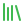
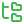

fhold
A home for your personal AI. fhold runs one persistent OpenCode agent in a single container on a machine you control. It remembers what you tell it through akm, runs recurring work you describe in ordinary language, and is reachable from the clients you already use: OpenCode, Claude Desktop, any MCP client, Discord or Slack. Linux alpha; you bring the model provider.
An agent at a glance
One standalone CLI installs the stack, signs you in to a provider through OpenCode, and confirms the agent answers before it calls setup done.
./fhold install --name personal-agent # one Compose project in ~/fhold/instances/personal-agent
./fhold setup # provider sign-in, then a real test request
fhold status # the Assistant container, healthy
fhold connect opencode # where to point your OpenCode clientCore concepts
The one default container: OpenCode for providers and models, akm for knowledge, supercronic for schedules. Nothing runs as root.

KnowledgeFacts, files and task definitions live in knowledge/ on your disk, indexed by akm, so every conversation starts informed.
Ask for a weekday morning briefing in plain language. It runs on a cron schedule in your timezone and files reports in your inbox.
Optional, policy-scoped MCP for everyone who isn't you. Named identities get chat, read or full; everything else fails closed.
Why fhold?
A hosted assistant forgets you between sessions, lives on someone else's servers and can't do anything while you're away. fhold keeps the agent, its memory and its schedule in a folder you own, and uses the providers, clients and tools you already have instead of inventing new ones.
A chat tab
Stateless, someone else's machine, only works while you're typing.
fhold
One persistent agent on your hardware, with memory, a schedule and a locked front door.
Also in the box
Trusted OpenCode locally, a Claude Desktop extension, or any MCP client through Guardian, with OAuth for a public endpoint.
One Portal image serves both. Allowlists are default-deny, and every user maps to a named identity with a fixed policy.
An optional desktop utility for setup, settings, connections and backups. It is not a server and runs nothing in the background.

Backup and recoveryPortable backups with a hash-verified manifest, previewed before they are applied. Updates replace only release-owned files.